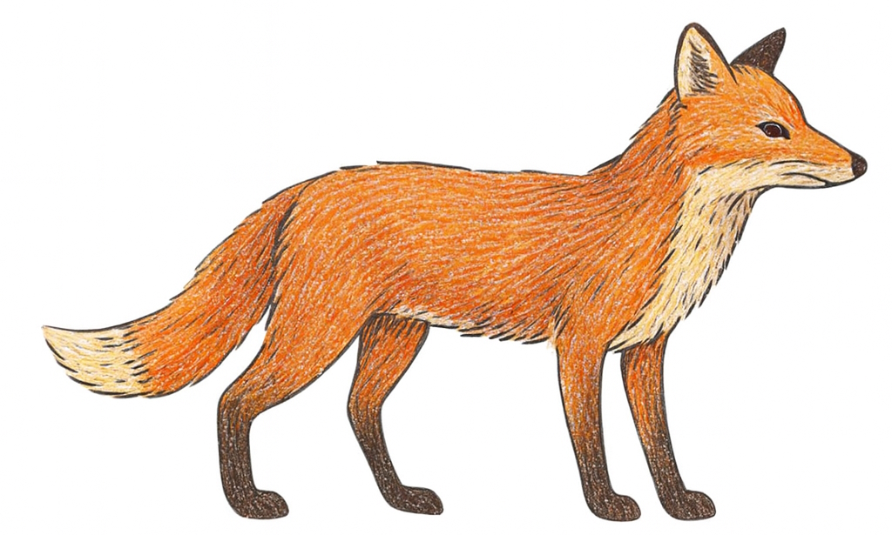
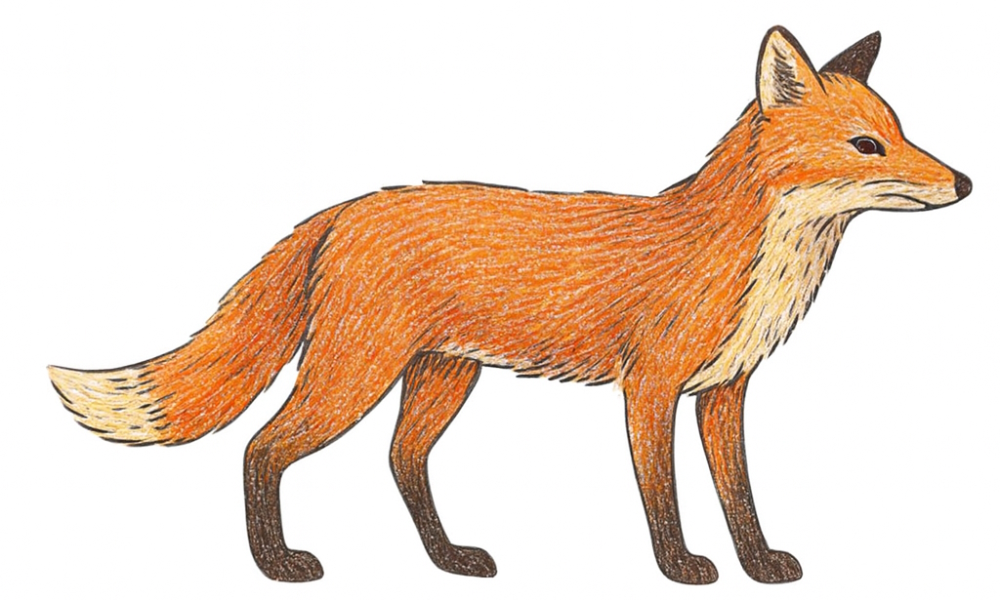

Allgemeines
Der Rotfuchs gehört zur Familie der Hunde und ist das am weitesten verbreitete Raubtier der Welt. Er wird etwa 60 bis 90 Zentimeter lang, dazu kommt noch ein buschiger Schwanz von bis zu 40 Zentimetern. Das Gewicht liegt zwischen 5 und 8 Kilogramm, in seltenen Fällen auch etwas mehr. In der Wildnis können Füchse bis zu 10 Jahre alt werden, meist jedoch nur 3 bis 5 Jahre. Ihr dichtes Fell ist rötlich gefärbt, der Bauch oft heller und die Schwanzspitze weiß. Der Rotfuchs lebt nicht nur in Europa, sondern auch in Asien, Nordamerika und sogar in Australien, wohin er von Menschen gebracht wurde.
Lebensraum
Der Hauptlebensraum des Rotfuchses ist der Wald, wo er in Bauten lebt oder selbst Erdhöhlen gräbt. Er passt sich aber sehr gut an unterschiedliche Umgebungen an und kommt deshalb auch in Feldern, Wiesen, Bergen und sogar in Städten und Dörfern vor. In Siedlungen fühlt er sich wohl, da er hier vor der Jagd geschützt ist und leicht Nahrung findet.
Nahrung
Rotfüchse sind Allesfresser, ernähren sich aber hauptsächlich von kleinen Säugetieren wie Mäusen. Ein Fuchs kann an einem Tag so viele Mäuse fangen, dass man später im Magen Dutzende Tiere nachweisen kann. Neben Mäusen frisst er auch Kaninchen, Vögel, Insekten, Beeren und Aas. Seine Fressfeinde sind vor allem größere Raubtiere wie Luchse oder Wölfe, in manchen Regionen auch Greifvögel, die Jungfüchse erbeuten.
Besonderheiten
Der Rotfuchs ist ein sehr anpassungsfähiges Tier. Er kann sowohl in dichten Wäldern als auch in Großstädten leben und findet fast überall Nahrung. Besonders auffällig ist sein guter Geruchssinn und sein ausgezeichnetes Gehör, mit dem er sogar Mäuse unter der Schneedecke orten kann. Sein buschiger Schwanz hilft ihm beim Laufen und Springen das Gleichgewicht zu halten.
Gefährdung und Schutz
Der Rotfuchs ist nicht gefährdet und zählt zu den häufigsten Raubtieren Europas. Dennoch wird er in vielen Regionen stark bejagt, vor allem wegen seines Fells oder um Wildbestände zu schützen. Schutzmaßnahmen im engeren Sinn gibt es kaum, da die Population stabil ist. In Städten und Dörfern profitiert der Rotfuchs jedoch vom Jagdverbot und kann sich dadurch ungestört ausbreiten.
So klingt der Fuchs
Zurück zur Startseite